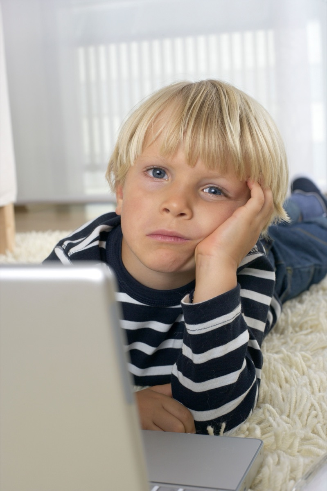

Ребёнок трёт глаза после компьютера? Проверьте высоту экрана
Не яркость и не «вредное излучение». Чаще всего глаза сохнут из-за того, что экран стоит слишком высоко. Ниже — стенд: подвигайте монитор сами и посмотрите, что делает веко.

Веко работает как крышка
Когда мы смотрим вниз, верхнее веко опускается и прикрывает бóльшую часть глаза. Слеза под ним испаряется медленно. Когда смотрим прямо или вверх, глаз распахнут, открытой поверхности больше, слеза высыхает быстро.
Шведские офтальмологи измерили это в цифрах. При взгляде на 20° вниз глазная щель сужается с 9,4 до 6,7 мм, а слёзная плёнка держится 43,5 секунды вместо 17,3 при взгляде вверх — в два с половиной раза дольше [1].
За экраном ребёнок моргает 7 раз в минуту вместо обычных 22[4]. Слеза и так обновляется редко — высокий экран добивает её окончательно.
Стенд: подвигайте монитор
Тяните монитор вверх и вниз
Пальцем на телефоне или мышью. Смотрите на глаз справа и на цифры.
Взгляд
—
Веко открыто
—
Слеза держится
—
…
Веко: 11,1 мм при взгляде вверх → 9,4 мм прямо → 6,7 мм при 20° вниз; слеза: 17,3 с вверх → 43,5 с при 20° вниз (Pansell, 2007). Промежуточные значения — линейная оценка между измеренными точками, поэтому «≈».
Куда обычно промахиваются
Родители чаще ставят экран слишком высоко, а не слишком низко: монитор на подставке «для солидности», ноутбук на стопке книг «чтобы не сутулился». Для осанки логика понятная, для глаз — наоборот. Экран выше глаз заставляет ребёнка смотреть вверх, глаз раскрывается, слеза сохнет. Отсюда покрасневшие глаза, трение кулаками, жалобы «щиплет» к вечеру.
Ноутбук, стоящий прямо на столе, глазам как раз подходит: взгляд идёт вниз. Проблема ноутбука — шея, и решается она перерывами и посадкой, а не подъёмом экрана к потолку.
Правило одно: верхний край экрана — на уровне глаз ребёнка или чуть ниже.
Тогда взгляд в центр экрана сам собой уходит на 15–20° вниз — это зона, которую рекомендуют OSHA и Американская оптометрическая ассоциация, а стандарт ISO 9241-5 считает естественную линию покоя глаз ещё ниже. Сильно ниже тоже не надо: при наклоне взгляда за 30–40° начинает уставать шея [5].
Верхний край — по пунктиру уровня глаз. Взгляд в центр экрана уходит вниз сам.
Пять минут на настройку
Посадите ребёнка как обычно и попросите смотреть прямо перед собой. Взгляд должен упереться в верхний край экрана. Выше — убирайте подставки; ниже — нормально.
Расстояние — вытянутая детская рука до экрана, можно чуть больше. Мелко — увеличьте шрифт, а не придвигайте ребёнка.
Экран слегка наклоните назад, чтобы он смотрел прямо в лицо, без бликов от люстры и окна.
Каждые 20–30 минут — пауза со взглядом в окно, вдаль. Заодно напомните моргнуть несколько раз с закрытыми до конца глазами.
Если глаза красные и сухие каждый вечер даже после настройки — к офтальмологу. Стенд выше объясняет механику, но не заменяет осмотр.
От редакции @ne_cybersec
Разбираем цифровую гигиену и детскую безопасность без паники и мифов — по измеримым данным. Больше материалов и обсуждение — в нашем канале @ne_cybersec.
Источники
Pansell T., Porsblad M., Abdi S. The effect of vertical gaze position on ocular tear film stability. Clinical and Experimental Optometry, 2007, 90(3). doi:10.1111/j.1444-0938.2007.00136.x
Sotoyama M., Villanueva M.B., Jonai H., Saito S. Ocular surface area as an informative index of visual ergonomics. Industrial Health, 1995, 33(2), 43–56.
Sotoyama M. et al. Analysis of ocular surface area for comfortable VDT workstation layout. Ergonomics, 1996, 39(6), 877–884.
Tsubota K., Nakamori K. Dry eyes and video display terminals. New England Journal of Medicine, 1993, 328(8), 584.
Turville K.L. et al. The effects of video display terminal height on the operator: a comparison of the 15° and 40° recommendations. Applied Ergonomics, 1998, 29(4), 239–246.
OSHA Computer Workstations eTool, раздел Monitors — https://www.osha.gov/etools/computer-workstations/components/monitors
ISO 9241-5:1998. Ergonomic requirements for office work with visual display terminals. Part 5: Workstation layout and postural requirements.